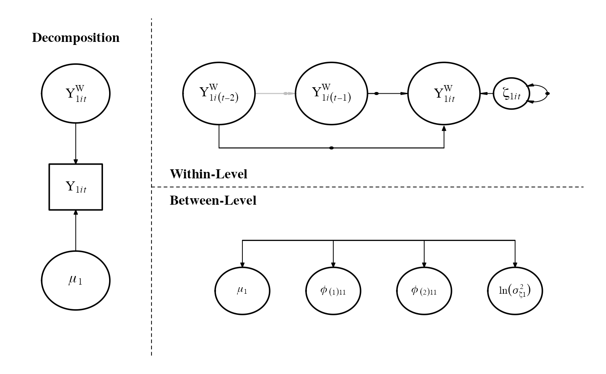

The mlts_paths function depcits models specified using mlts_model as a
path diagram.
mlts_paths(
model,
asp_decomp = 0.25,
asp_w_b = 0.5,
fig_margins.x = c(0, 8),
fig_margins.y = c(0, 8),
width = 7,
height = 5,
file = NULL,
asp = height/width,
family = "serif",
cex_b = 0.8,
cex_w = 1,
cex_decomp = 1,
cex_loads = 0.8,
b_style = "h",
w_y_offset = 0,
decomp_F_y_offset = 4,
arrHead_w = 0.16,
arrHead_b = 0.16,
scale_decomp_ind = 0.35,
scale_decomp_F = 0.45,
scale_within = 0.3,
scale_within_inno = 0.2,
scale_between = 0.3,
scale_int = 0.25,
lwd_nodes = 1.7,
rand_dot_pos = 0.4,
units = "in",
res = 700,
pointsize = 10,
type = "cairo",
y_ind_labs = NULL,
y_fac_labs = NULL,
y_fac_lab_sep = ",",
remove_lag_lab = FALSE,
adj_load_x = 1.25,
...
)data.frame. Output of mlts_model and related functions.
A numeric value specifying the aspect ratio for the decomposition plot region. Defaults to 0.25.
A numeric value specifying the aspect ratio between the within-level and between-level sections. Defaults to 0.5.
A numeric vector of length 2 defining the horizontal margins
of the plot. Defaults to c(0, 8).
A numeric vector of length 2 defining the vertical margins
of the plot. Defaults to c(0, 8).
Width of the plot in inches. Defaults to 7.
Height of the plot in inches. Defaults to 5.
A character string specifying the path to save the plot. If NULL,
the plot will not be saved. Defaults to NULL.
The overall aspect ratio of the plot, computed as height / width.
Defaults to height / width.
Font family used in the plot. Defaults to "serif".
Numeric value specifying the scaling of text in the between-level section. Defaults to 0.8.
Numeric value specifying the scaling of text in the within-level section. Defaults to 0.8.
Numeric value specifying the scaling of text in the decomposition section. Defaults to 0.8.
Numeric value specifying the scaling of text of loading parameters. Defaults to 0.8.
A character string specifying the style of the between-level plot
("h" for horizontal). Defaults to "h".
Numeric value specifying the vertical width of the within-level part. Defaults to 0.
Numeric value to control the vertical space between manifest indicators and latent factors in the decomposition part of the path model. Defaults to 4.
Numeric values controlling the arrowhead size for within-level paths. Defaults to 0.16.
Numeric values controlling the arrowhead size for between-level paths. Defaults to 0.16.
Numeric. Specify the scaling factor for manifest indicators in the decomposition section.
Numeric. Specify the scaling factor for latent factors in the decomposition section.
Numeric. Specify the scaling factor for latent factors in the within-level section.
Numeric. Specify the scaling factor for innovations in the within-level section.
Numeric. Specify the scaling factor for factors in the between-level section.
Numeric. Specify the scaling factor for interaction factors in the within-level section.
Line width for node borders in the plot. Defaults to 1.7.
Numeric value controlling the random dot position in the plot. Defaults to 0.5.
A character string specifying the units for saving the plot. Defaults to "in".
The nominal resolution in ppi. Defaults to 320.
Numeric value specifying the font point size for the plot. Defaults to 10.
A character string specifying the file type for the saved plot (e.g., "cairo"). Defaults to "cairo".
A vector of character strings with names of observed variables.
A vector of character strings with factor labels to replace numeric indices in parameter names.
A character string to separate multiple factor labels. Defaults to ",".
Logical. Remove lag index from phi-parameter labels. Defaults to FALSE.
Numeric value specifying the x-axis offset loading parameter labels. Defaults to 1.25.
Additional arguments passed to internal plotting functions.
A graphical object representing the path diagram of the model.
This function calculates positions, radii, and labels for nodes and arrows based on the model structure and its parameters. It divides the plot into sections:
Decomposition: Shows the breakdown of observed variables into within- and between-level components.
Within-Level Dynamics: Illustrates autoregressive and cross-lagged paths between variables at the within level.
Between-Level Dynamics: Depicts random effects, covariates, and their interrelations at the between level.
Depending on the model structure (e.g., maximum lag, number of random effects, presence of interaction terms), the function dynamically adjusts the visualization.
# \donttest{
# A two-level second-order autoregressive model
model <- mlts_model(q = 1, max_lag = 2)
# Plot the paths
mlts_paths(model)

# }